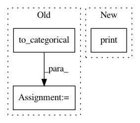

1aff940e60d7d62bd82ddf7469e666197832e212,src/classifiers/cnn_unittest.py,TestCNNModel,test_mnist,#TestCNNModel#,55
Before Change
X_train, Y_train, X_test, Y_test = X_train[:NB_TRAIN], Y_train[:NB_TRAIN], X_test[:NB_TEST], Y_test[:NB_TEST]
// convert class vectors to binary class matrices
Y_train = np_utils.to_categorical(Y_train,NB_CLASSES)
Y_test = np_utils.to_categorical(Y_test,NB_CLASSES)
im_shape = X_train[0].shape
After Change
scores = model.evaluate(X_test,Y_test)
print("\naccuracy: %.2f%%" % (scores[1] * 100))
if __name__ == "__main__":
unittest.main()
In pattern: SUPERPATTERN
Frequency: 3
Non-data size: 3
Instances
Project Name: IBM/adversarial-robustness-toolbox
Commit Name: 1aff940e60d7d62bd82ddf7469e666197832e212
Time: 2017-05-11
Author: valentina.zantedeschi@ibm.com
File Name: src/classifiers/cnn_unittest.py
Class Name: TestCNNModel
Method Name: test_mnist
Project Name: IBM/adversarial-robustness-toolbox
Commit Name: 1aff940e60d7d62bd82ddf7469e666197832e212
Time: 2017-05-11
Author: valentina.zantedeschi@ibm.com
File Name: src/classifiers/cnn_unittest.py
Class Name: TestCNNModel
Method Name: test_cifar
Project Name: osmr/imgclsmob
Commit Name: 09e4a76102ff4a06a835180237ea171eb475985c
Time: 2018-09-19
Author: osemery@gmail.com
File Name: keras_/models/mobilenet.py
Class Name:
Method Name: _test